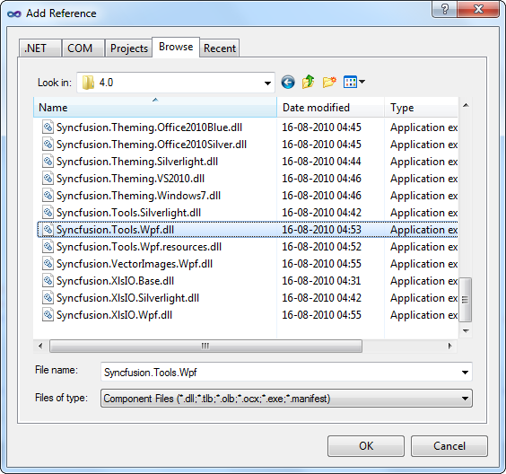
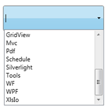

1. Open Visual Studio, On the File menu click New -> Project. This opens the New Project Dialog box.

Figure 9: Creating New Project
2. In the Project Dialog window, select WPF application and, in the Name field type the name of the project. Click OK.

Figure 10: Creating New WPF Application
3. Go to Solution Explorer. Right-click References folder and click Add Reference. Add the Syncfusion.Tools.WPF.dll assembly to the project References folder.

Figure 11: Adding Reference
|
[XAML] xmlns:syncfusion="clr-namespace: Syncfusion.Windows.Tools.Controls;assembly=Syncfusion.Tools.Wpf" |
4. Add Syncfusion.Tools.WPF reference in XAML and C# code as follows.
|
[C#] using Syncfusion.Windows.Tools.Controls; |
5. Click and open the C# file. Add AutoComplete to the application.
|
[C#] AutoComplete AutoComplete1 = new AutoComplete(); List<String> ProductSource = new List<String>(); customSource.Add("WPF"); customSource.Add("Chart"); customSource.Add("GridView"); customSource.Add("WF"); customSource.Add("Xlsio"); customSource.Add("Business Intelligence"); customSource.Add("Tools"); customSource.Add("Silverlight"); customSource.Add("Schedule"); customSource.Add("Mvc"); customSource.Add("Pdf"); this.AutoComplete1.CustomSource = ProductSource; |

Figure 12: AutoComplete Created Using C#